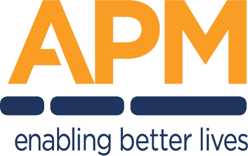

● Source of truthDigital Workplace — AVD Program Tracker
5 AVD use cases on Azure Virtual Desktop via Nerdio · delivered by Twiki Corp for APM

● Source of truthDelivery is a tight, AI-assisted two-person team (Shaun Struik on design/DDDs/documentation/KB + identity & the Function App, and the AVD Build Engineer on the hands-on AVD / Nerdio / Intune / image build) — efficient and on track. The real risk to 30 Sep is APM-side dependencies: APM is running several tier-one projects at once, so network build, decisions, approvals and pen-test scheduling sit with APM departments. The panel below tracks those dependencies; the findings call out what is gating progress now.
| ID | Milestone | Workstream | Date | Critical |
|---|
Filter by workstream or person above. Orange rows are yours (Architect / Design); blue rows are the AVD Build Engineer's. “Dep check” recomputes live: Overlap means the task starts before a predecessor finishes.
| ID | Task | Owner | Support | Dep | Start | End | Days | Status | Dep check |
|---|
| # | Risk / open decision | Impact | Likelihood | Owner | Mitigation |
|---|